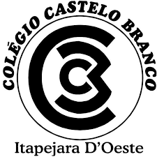
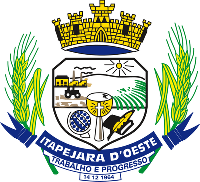
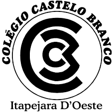
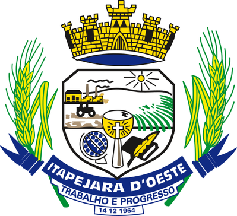

Feira do Produtor
Festa Junina
Bem vindo a 17ª edição da festa junina de Itapejada D'Oeste, aqui estão algumas informações sobre a festa, como por exemplo, quem são os colaboradores, onde acontecerá, quando acontecerá etc.
Sumário
1-Mapa
2-Colaboradores
3-Informaçoes importantes
4-Apoiadores
5-Participe você também
1- Mapa
O mapa a seguir, representa como será organizada a festa geográficamente
2- Nossos colaboradores e o que vendem:
1- Weber
Salame
Torresmo
Morcela
Banha de Porco
Linguicinha
Costelinha
2- Zdziarski
Pão fatiado
Pão francês
Bolo de Chocolate
Bolo de Fubá
Milho cozido
Pamonha (doce e salgada)
3- Lepchack
Galeto frito
Coxa de frango (assada)
Frango assado (inteiro)
Nugget
Linguicinha de frango
4- Livre
Registre-se
5- Brahma
Refrigerantes Lata
Refrigerantes 2L
Cerveja Lata
Cerverja garrafa 600ml
Chope Torre (1L, 1.5L e 2L)
3- Informações importantes
Local: CTG Porteira da Amizade, Itapejara D'Oeste - PR
Data: 30 de Junho de 2025
Início: 14:00
Danças: à partir das 15:30
.jpg) 


